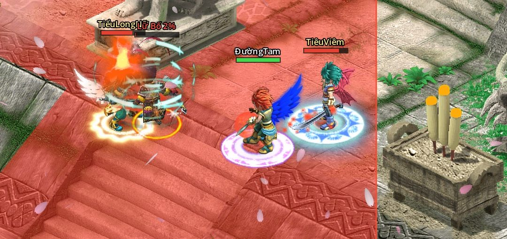

Chiến Quốc Remaster
Cố nhân, đã đến lúc trở lại.
MMORPG Chiến Quốc (2008) hồi sinh trên nền tảng mới. Vẫn là Tân Thủ Thôn ngày ấy, nay chơi online cùng bằng hữu, miễn phí và không nạp thẻ.
Xem video: ba anh hùng đấu Lữ Bố- 7 môn phái
- 5 người một tổ đội
- 34 thú cưỡi
- 0 đồng nạp thẻ
Bản 4.0 · sắp ra mắt
Trần cấp 50 và doanh trại phản quân
Theo dấu Từ Phúc ra Biển Đông, vào nước Tần dẹp loạn Thành Kiều. Bốn tướng phản quân chờ ở doanh trại, hạ đủ cả bốn mới được lật thẻ.
Bản 4.0 có gì- Cấp 5014 bản đồ mới, quái cấp 41 tới 50
- 4 bossPhó bản Thành Kiều Quân Doanh, ba độ khó
- 18 nhiệm vụCốt truyện hồi 11 và 12
- Set bậc 2Nâng set sư môn bằng Tử Kim Tinh
Quay trong game, có nhạc nền
Ba anh hùng, một Lữ Bố
Đường Tam, Tiêu Viêm và Tiểu Long Nữ cùng vào Cổ Mộ, hạ Lữ Bố rồi lật thẻ chia đồ. Pháp bảo dưới chân, cánh trên lưng, vũ khí 10 sao rực sáng.


Có gì trong game
Đánh phó bản cùng bằng hữu, sưu tập thú cưỡi, rèn món đồ 10 sao, hay chỉ ngồi câu cá bên hồ thành Chu.
-

Phó bản Cổ Mộ: đấu Lữ Bố Đội 1 tới 5 người, ba độ khó Thường, Khó, Địa Ngục. Lữ Bố biết đổi mục tiêu, xung phong, hoá dạng thứ hai. Hạ xong lật thẻ nhận Tinh Thạch, pháp bảo, thú cưỡi. -
 Môn phái
Bảy môn phái
Cây kĩ năng hai nhánh, tự chọn lối đánh.
Môn phái
Bảy môn phái
Cây kĩ năng hai nhánh, tự chọn lối đánh.
- Bản 4.0 Thành Kiều: 4 boss Doanh trại phản quân ở nước Tần. Hạ đủ bốn tướng mới mở bảng thẻ cuối, có Tử Kim Tinh.
-
 Sưu tập
34 thú cưỡi, 12 thần thú
Mỗi con cộng chỉ số, đủ 10 sao có con đổi hình.
Sưu tập
34 thú cưỡi, 12 thần thú
Mỗi con cộng chỉ số, đủ 10 sao có con đổi hình.
- Bản 4.0 Câu cá bên hồ Từ cấp 20, ngồi câu ở Ngư Ông, 240 lần mỗi ngày. Ngư Điểm đổi Thăng Phẩm, Thú Hồn, thú cưỡi Cá Voi Đom Đóm.
-

 Rèn đồ
Nâng sao, Bùa Ma Thuật
Đồ lên 10 sao, khảm Tinh Thạch, tái tạo dòng. Có Bùa thì xịt vẫn giữ sao.
Rèn đồ
Nâng sao, Bùa Ma Thuật
Đồ lên 10 sao, khảm Tinh Thạch, tái tạo dòng. Có Bùa thì xịt vẫn giữ sao.
-
 Online
Chơi cùng bằng hữu
Tổ đội 5 người, chia kinh nghiệm, kênh chat Thế Giới. Cùng nhau truy bắt phản đồ, càn quét Phong Yêu Kính, săn Tống Bảo Tiểu Yêu.
Online
Chơi cùng bằng hữu
Tổ đội 5 người, chia kinh nghiệm, kênh chat Thế Giới. Cùng nhau truy bắt phản đồ, càn quét Phong Yêu Kính, săn Tống Bảo Tiểu Yêu.
Bảy môn phái
Đủ cấp 10 thì tới căn cứ bái sư. Mỗi phái hai nhánh chiêu, đổi nhánh được ở sư phụ.


Làm vì yêu Chiến Quốc
Chiến Quốc Remaster được làm bởi cộng đồng những người thực sự yêu thích Chiến Quốc, không phải bởi một công ty.
-
Từ cộng đồng, cho cộng đồng
Mỗi bản sửa, mỗi tính năng đều đến từ những người từng chơi Chiến Quốc và muốn thấy nó sống lại.
-
Miễn phí mãi mãi
Không nạp thẻ, không bán vật phẩm, không có bất cứ hình thức thu tiền nào.
-
Giữ cốt lõi, sửa lỗi, cân bằng
Duy trì mọi giá trị cốt lõi của game cũ, đồng thời sửa các lỗi và cân bằng lại lối chơi.


Cài đặt 3 bước
-
Tải và giải nén
Tải file zip (39 MB), giải nén vào một thư mục bình thường, đừng để trong Program Files.
-
Chạy launcher
Mở thư mục ChienQuocRemaster, chạy ChienQuocRemaster.exe. Lần đầu launcher tự tải gói game khoảng 7 GB, lần sau chỉ tải phần mới. Launcher tự cập nhật cả chính nó.
-
Tạo tài khoản
Đăng kí ngay ở màn đăng nhập, tạo nhân vật rồi vào game.
Đã chơi bản 3.0: tải launcher 3.1 một lần, giải nén đè lên thư mục ChienQuocRemaster cũ (giữ nguyên thư mục packs thì không phải tải lại dữ liệu đã có). Launcher 3.0 không vào được bản 3.1.
Windows báo "Windows protected your PC" thì bấm More info, rồi Run anyway. Launcher chưa có chữ kí số, không phải virus.
Quà tân thủ: welcome
Nhập ở Thần Tiên Gia Gia (Tân Thủ Thôn), mỗi nhân vật nhận một lần: 50 Thẻ Lăng Ba Vi Bộ, 2 Sơ Cấp Đoạn Thạch, 20 Hành Quân Tán, 30 Phi Hành Phù và 10.000 ngân lượng (đồ khoá, cần 5 ô hành trang trống).
- Hệ điều hành
- Windows 10 hoặc 11, 64 bit
- Ổ trống
- Ít nhất 10 GB
- Bộ nhớ
- 8 GB RAM
- Đồ hoạ
- Card 2 GB, OpenGL 3.3
- Mạng
- Cần Internet
Từ kí ức tới máy chủ mới
-
Chiến Quốc ra mắt
MMORPG 2.5D isometric, bảy nước, bảy môn phái. Tuổi thơ của cả một thế hệ game thủ Việt.
-
Bản demo 2.0, chơi offline
Lần đầu người chơi quay lại Tân Thủ Thôn: bốn vùng đất, cốt truyện Vết Nứt, môn phái Cấm Vệ Quân và cuộc gặp gỡ Lữ Bố.
-
Bản 3.0, chơi online
Máy chủ mới, chơi cùng bằng hữu. Đủ bảy môn phái, cấp tối đa 40, Cổ Mộ, thú cưỡi, thần thú. Launcher tự tải và tự cập nhật game.
-
Bản 4.0, trần cấp 50
Biển Đông, nước Tần, Kênh Trịnh Quốc và phó bản Thành Kiều. Xem mọi phiên bản.